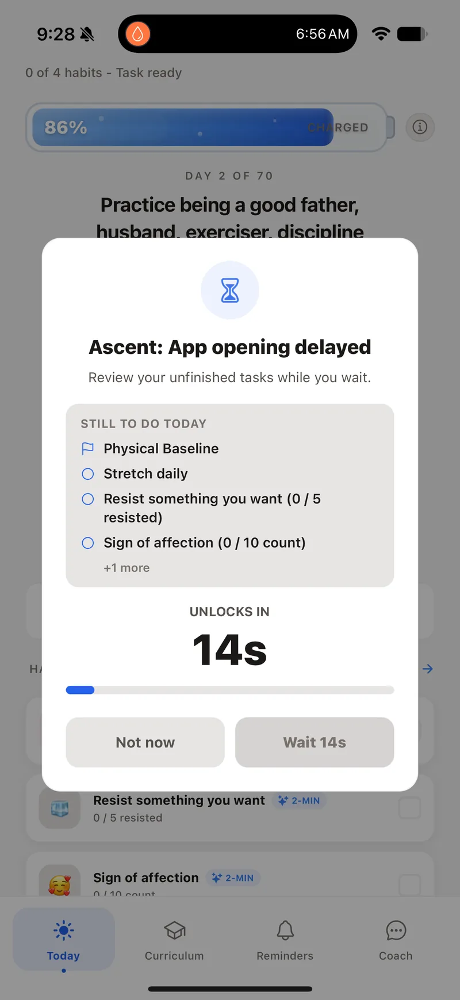

App blocker + habit system
Build habits on iPhone. Block the apps that get in the way.
Ascent turns one meaningful goal into a focused 70-day daily plan, keeps today’s action visible, shrinks it when the day is hard, and can add optional Screen Time friction before distracting apps.
Free to start · No credit card · Setup in under 2 minutes
Official App Store listing
Free tier available
Screen Time inputs are optional
We do not sell personal data



App BlockerPauses before default apps
70 daysAI-generated daily plan
Home screenWidgets before feeds